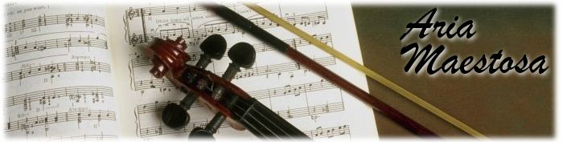

<html>
<body link=black hlink=black vlink=black>

<!----------------------------- TITLE ------------------------->
<center>

<br/><br/>
<h2>Download</h2>

</center>

<!----------------------------- CONTENT ------------------------->

<blockquote>
<b>Mac OS X 10.4 and up, PPC and intel</b>

<br/><br/>
<list>
<li/><A href="http://downloads.sourceforge.net/ariamaestosa/AriaMaestosa-1.1.3.zip"><b>stable version 1.1.3</b></A>
<li/><A href="http://downloads.sourceforge.net/ariamaestosa/AriaMaestosa-1.2b7.zip"><b>development version 1.2b7</b></A>
</list>
<br/>
<i>Note : current development versions are considered generally stable enough, except for the upcoming printing feature.</i>

<br/>
<br/>

<b> Linux (Alsa)</b>
<br/><br/>
<list>
<li/><A href="http://packman.links2linux.de/package/AriaMaestosa/87485">SUSE 10 and 11 rpms</A> (also <A href="http://rpm.pbone.net/index.php3?stat=3&search=AriaMaestosa&srodzaj=3">listed here</A>)
<li/><A href="building.html">building from source</A>
</list>

<br/>
<A href="http://sourceforge.net/project/showfiles.php?group_id=186987">See all downloads on sourceforge</A><br/>


<br/><br/><br/>
<A name="changelog">   <center><h2>What's new</h2></center>   </A>

<br/>

<font size=1>
<i>(See <A href="changelog.html">full changelog</A>)</i>
</font>

<br/>
<h3>What's new in version 1.2 beta 7</h3>
<list>
<li/> Many improvements to printing
<li/> Minor bug fixes
<li/> Better Linux support
</list>

<br/>
<h3>What's new in version 1.2 beta 6</h3>
<list>
<li/> Many improvements to printing
</list>


<br/>
<h3>What's new in version 1.2 beta 5</h3>
<list>
<li/> Aria can now work without OpenGL (mainly for Linux)
<li/> Fixed crashes, bugs and other glitches
<li/> Major improvements to printing
<li/> Anti-aliased font rendering
<li/> Got rid of annoying GLUT dependency (mainly for Linux)
<li/> Allowed moving notes by one octave with shift+up/down
<li/> Allowed moving notes by one measure with shift+left/right
<li/> You can now choose the default view for score editor in preferences
</list>

<br/>
<h3>What's new in version 1.2 beta 4</h3>
<list>
<li/> New look : unified toolbar, refreshed icons
<li/> Various user interface improvements, including the ability to see song length and setting default note volume
<li/> Improvement to controller editor for on/off controllers, namely making 'sustain' usable.
<li/> Minor score editor improvements
<li/> Improvements to score printing
<li/> Added ability to maximize tracks
<li/> Bug fixes
</list>

<br/>
<h3>What's new in version 1.2 beta 2</h3>
<list>
<li/> Bug fixes
<li/> New magnetic grid picker widget
<li/> Improvements on printing, especially for scores
</list>

<br/>
<h3>What's new in version 1.2 beta 1</h3>
<list>
<li/> Bug fixes
<li/> New toolbar
<li/> More work on printing (initial score printing support)
<li/> Improvements to score display
</list>

<br/>
<h3>What's new in version 1.1.3</h3>
<list>
<li/> Bug fixes
<li/> Minor cosmetic improvements
</list>


<br/>
<h3>What's new in version 1.1.2</h3>
<list>
<li/> Added german translation (thanks to Friedrich Weber!)
<li/> Bug fixes (including some major ones)
<li/> Minor cosmetic improvements
</list>

<br/>
<h3>What's new in version 1.1.1</h3>
<list>
<li/> Added a feature to see other tracks in the background of the current track
<li/> Started work towards notation printing/PDF export (tablature only for now)
<li/> Linux support is now getting good.
<li/> Many bug fixes
</list>

<br/>
<h3>What's new in version 1.1</h3>
<list>
<li/> Added new <i>score editor</i>
<li/> Totally new undo system that is faster, now works in controller editor too and allows multiple undos
<li/> Fixed countless crashes, bugs and glitches
<li/> Added mouse wheels support to vertically scroll tracks
<li/> Added italian translation
<li/> Linux port improved by leaps and bounds, slowly getting more stable
<li/> Improved document icon
<li/> Removed useless stuff from .aria files, making them significantly smaller
<li/> Major code refactoring and cleanup, improvements to build system
<li/> Made document saving data loss-safe : if a problem occurs while an aria file is being saved, no data loss will occur
</list>

</body>
</html>